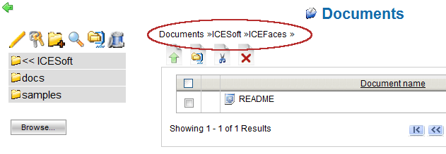
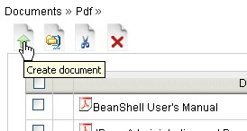
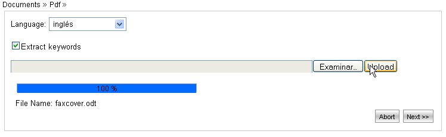
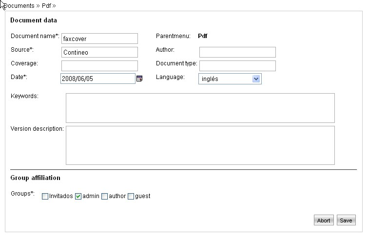

Adding a Document |
The documents section is accesible by selecting the word "Documents" from the main menu.
Next, we describe the needed steps to add a new document.
- Select the destination folder
Navigating the tree hierarchical system at the left of the screen.
The current path is shown on the right (as evidenced in figure). The selected folder is the last of the list.

- Transfer the document file into the system
Access to the Upload new document screen by clicking the icon "Create document" and select the file from your own Hard Disk

Select the document language (this operation is very important because it determines the type of language analyzer to be used by the system in order to extract and recognize the document contents and its key words).
Enable the document upload into the system by clicking the "Upload" button.
As this operation starts, the bottom progress bar will show the advance percentage of such operation.
As this file transfer procedure ends, click on the "Next" button.

- Define the Document Data
On this screen, it is possible to specify and modify additional information about the document being created.
The system extracts automatically some information about the transfered file (based on the selected language) and shows the fields Document name, Author and Key words extracted directly from the file content.
The system section Key Words shows the documents grouped by key.
It is possible, besides, to define a description about a document version. As a document is added, version 1.0 is created, using the specified description.

- Specify Document Security preferences
The section "Group affiliation" visible on previous image is used to define the document security.
As one or more groups are selected, the document is assigned to them and the users of these groups wil inherit automatically the read/write permissions on the document defined for each group.
For more information about group permissions, go to section Group Managements in the manual.
- Save the document
Clicking on the "Save" button on the bottom right side of the screen, the new document is created and starts to be accesible in searching and querying operations.